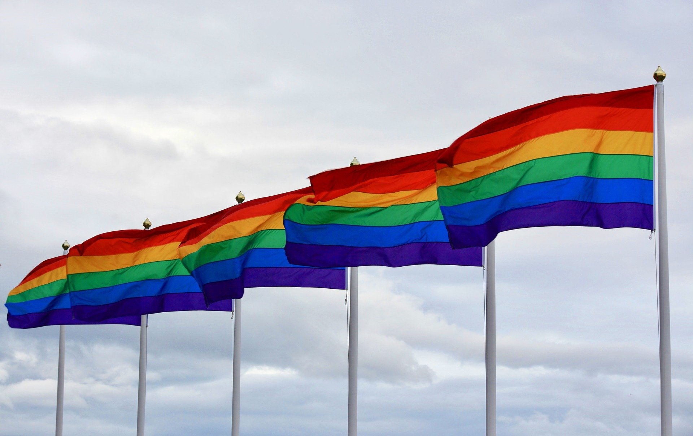

Las siglas
Como te podrás haber dado cuenta, la comunidad LGBTQ+ tiene varias siglas, pero ¿Qué significan? Aquí te explicamos algunas de las muchas siglas que existen.
Banderas representando a la comunidad LGBTQ+
El significado de las siglas
-
Lesbiana: Se refiere a las mujeres que sienten atracción romántica o sexual hacia otras mujeres.
-
Gay: Se refiere a los hombres que sienten atracción romántica o sexual hacia otros hombres.
-
Bisexual: Se refiere a las personas que sienten atracción romática o sexual hacia las personas de su mismo género o sexo y también del género o sexo opuesto.
-
Transexual: Se refiere a las personas que se identifican con el género y sexo opuesto y optan por hacer un tratamiento quirúrgico.
-
Transgénero: Se refiere a las personas que se identifican con el género opuesto y optan por sólo hacer un tratamiento hormonal.
-
Travesti: Se refiere a las personas que adoptan comportamientos, vestimentas y expresiones que se consideran socialmente del género opuesto. Esto no tiene nada que ver con su orientación sexual.
-
Queer: Se refiere a las personas que no se identifican con el género que se les dio socialmente pero que tampoco se identifican con el género opuesto o con alguno en particular.
-
Intersexual: Se refiere a las personas que nacieron con características físicas y biológicas de ambos sexos.
-
Asexual: Se refiere a las personas que no se sienten sexualmente atraídas hacia otras personas, sin embargo, sí pueden amar románticamente a otras personas.
-
Arromanticismo: Se refiere a las personas que no se sienten románticamente atraídas hacia otras personas, sin embargo, sí se pueden sentir atraídas sexualmente hacia otras personas.
-
Pansexual: Se refiere a las personas que sienten atracción romántica o sexual hacia otra persona, sin importar su género.
Ojo: Hay personas que no siempre se sienten identificadas o se quieren identificar con una sigla. Lo cual, es perfectamente válido. Respetemos decisiones 🌺.